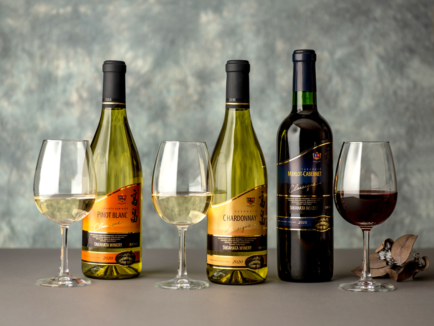

山形県のマップと天気
山形県の概要
| 項目 | 詳細 |
|---|---|
| 面積 | 9,323.15平方キロメートル (東西約97km、南北約164km) [令和5年4月1日現在] |
| 人口 | 1,040,971人 (男504,556人、女536,415人) [令和4年10月1日現在] |
| 世帯 | 400,895世帯 [令和4年10月1日現在] |
| 市町村数 | 35 (13市19町3村) |
主な特産品
さくらんぼ、メロン、ぶどう、すいか、桃、枝豆、りんご、かき、西洋なし(ラフランス)、米、牛肉、酒、ワインなど
さくらんぼ
ラフランス

米

ワイン
主な祭り
山形花笠まつり(8月上旬：山形市)、新庄まつり(8月下旬：新庄市)、日本一の芋煮会フェスティバル(9月中旬：山形市)、黒川能王祇祭(2月上旬：鶴岡市)、上杉雪灯籠まつり(2月上旬：米沢市)、天童桜まつり(4月下旬：天童市)など

山形花笠まつり
新庄まつり
日本一の芋煮会フェスティバル
天童桜まつり
×

山形県の歴史
山形県の略年表
| 西暦 | 元号 | できごと |
|---|---|---|
| 712 | 和銅5 | 出羽国が成立 |
| 1868 | 明治元 | 奥羽越列藩同盟が明治新政府軍に敗北（戊辰戦争） |
| 1871 | 明治4 | 廃藩置県。山形県、置賜県、酒田県を設置 |
| 1876 | 明治9 | 山形県、置賜県、酒田県が統合され、現在の山形県になる |
| 1887 | 明治20 | 松ヶ岡製糸場開設 |
| 1892 | 明治25 | 米沢絹織物業組合設立 |
| 1894 | 明治27 | 山形市南部大火 |
| 1897 | 明治30 | 山形歩兵第三十二連隊設置 |
| 1899 | 明治32 | 奥羽本線開業。福島－米沢間開通 |
| 1911 | 明治44 | 山形北部大火。県庁舎焼失 |
| 1920 | 大正9 | 山形高等学校開校 |
| 1925 | 大正14 | のちの昭和天皇が県内を巡行 |
| 1934 | 昭和9 | 冷害による大凶作 |
| 1945 | 昭和20 | 山形空襲 |
| 1947 | 昭和22 | 農地改革 |
| 1949 | 昭和24 | 山形大学設置 |
| 1964 | 昭和39 | 山形空港が開港 |
| 1988 | 昭和63 | 山形鉄道が発足 |
| 1990 | 平成2 | 寒河江ダムが完成 |
| 1992 | 平成4 | 山形新幹線が開業 |
| 2005 | 平成17 | 平成の大合併により現在の13市19町3村になる |
山形県の日本一
-
さくらんぼ収穫量
13,200t (2023年)
-
ラーメン店舗数
406件 (2021年)
-
ラーメン外食費用
1世帯あたり 17,593円 (2024年)
-
一般世帯の平均人員
1世帯あたり 2.61人 (2020年)
-
三世代同居率
13.9% (2020年)
-
即身仏の数
8体